GAME DESIGN by RICHARD GARFIELD
VERSION 1.2 - JANUARY, 2019
Updates and changes from the previous version are highlighted in Red.
Added Errata Section.
Added Resolve As Much As You Can section to rules.
Added Cannot Versus Must section to Glossary.
Various other changes made to glossary to enhance rules clarity.
Added new FAQ questions.
WELCOME TO THE CRUCIBLE…
GAME DESIGN by RICHARD GARFIELD
STARTER SET COMPONENTS
The components included in a KeyForge: Call of the Archons starter set are pictured here for identification purposes.
You are an Archon. Hailed by some as a god, respected by others for your wisdom, you were born—or perhaps created—on the Crucible, a world in which anything is possible.
The Crucible is ancient, but ever renewed. An artificial planet hanging in the center of the universe, the Crucible’s many layers remain constantly under construction by the enigmatic and mischievous Architects. For raw materials, the Architects have harvested countless worlds, blending them into a new whole both familiar and alien to the creatures that dwell there.
Whether lone specimens or entire cultures, the beings brought to the Crucible find themselves in a strange wonderland with no obvious means of returning to their former homes. Some thrive, building new societies and developing new technologies with the aid of the mysterious psychic substance known as Æmber. Some discard the trappings of their old lives, adopting the ways and customs of new tribes discovered in this new world. Others devolve, bodies and minds twisted beyond all recognition, incorporating Æmber into their very bodies.
As an Archon, you have gathered followers in your journeys throughout the Crucible, allies who find value in your ageless wisdom and your ability to speak to all creatures. With the aid of these allies, you seek out Vaults hidden throughout the Crucible by the cryptic Architects. Each Vault can only be unlocked by Æmber-forged keys. Once open, a Vault’s contents—the power and knowledge of the Architects—can be consumed by only a single Archon.
When two Archons discover a Vault, only one can gain its knowledge. Only one can move one step closer to the secret of the Crucible…
OVERVIEW
KeyForge is a two-player card game in which each player takes the role of an Archon, and leads that Archon’s deck against their opponent.
A player’s deck represents a team that is attempting to gain Æmber and forge keys. The first player to gather three keys is able to unlock a Vault and win the game.
The defining feature of KeyForge is that no two decks are alike. This is not a trading card game—you cannot craft a deck. Rather, each deck must remain as it is. Every deck in existence is unique!
USING THIS DOCUMENT
If you have never played a game of KeyForge before, start by using the Quickstart document included in the starter set to learn the basics of the game.
After playing a game using the Quickstart, players can read the full rules in this document and learn more about the KeyForge setting.
In addition to rules and setting information, this document includes a Glossary of important game concepts and terminology that will be useful while interpreting card abilities.
Rules . . . . . . . . . . . . . . . . . . . . p.ag. e. 3 . . . . . . Glossary . . . . . . . . . . . . . . . . . . pa.g.e.9 . . . . . Fiction and Setting Information . . . . p. a.ge 14
Errata and FAQ . . . . . . . . . . . . . p.ag. e. 2.5. .
22 Damage Tokens
26 Æmber Tokens Radiant Argus the Supreme Starter Deck Miss “Onyx” Censorius
Starter Deck
6 Key Tokens
10 Power Status
Cards
10 Stun Status
Cards
2 Unique KeyForge
Archon Decks
This section introduces a number of foundational concepts to keep in mind while playing the game.
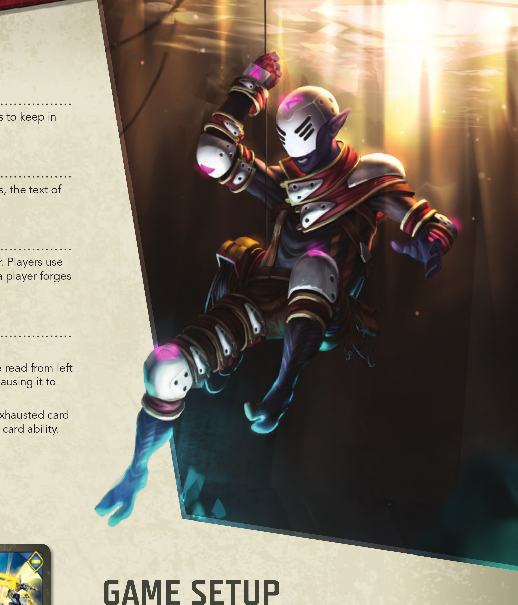KEY CONCEPTS
THE GOLDEN RULE
If the text of a card directly contradicts the text of the rules, the text of the card takes precedence.
OBJECTIVE
During the game, players use their cards to collect Æmber. Players use Æmber to forge keys. The game ends immediately when a player forges their third key, and that player wins the game.
READY AND EXHAUSTED
Cards that are in play exist in one of two states.
Ready cards are oriented upright so that their text may be read from left to right. A ready card can be used during a player’s turn, causing it to exhaust.
Exhausted cards are rotated 90 degrees to the side. An exhausted card is not able to be used until it is readied by a game step or card ability.
All creatures and artifacts enter play exhausted.
To set up the game, perform the following steps, in order:
1 Place all damage tokens, Æmber tokens, and status cards in a common supply within easy reach of both players.
Ready
Exhausted
RUNNING OUT OF TOKENS OR STATUS CARDS
There is no limit to the number of damage tokens, Æmber tokens, or status cards that can be in the game area at a given time. If there is a shortage of the provided tokens or status cards, other tokens, counters, or coins may be used to track the game state.
2 Each player places their identity card to the left or right side of their play area.
3 Each player places three key tokens, one of each color, with the unforged side faceup near their identity card.
4 Randomly determine who is the first player. That player takes the first turn when the game begins. (If players are playing a series of games between two decks, in each game after the first, the player who used the deck that was defeated in the previous game chooses who is the first player.)
5 Each player shuffles their deck and offers it to the opponent for additional shuffling and/or a final cut.
6 The first player draws a starting hand of seven cards. The other player draws a starting hand of six cards.
7 Each player, starting with the first player, has one opportunity to mulligan their starting hand by shuffling it back into their deck and drawing a new starting hand with one fewer card in it. (This step is skipped in the Quickstart game.)
The game is now ready to begin.
SUGGESTED PLAY AREA (MID-GAME)
Common Supply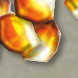
This creature gets +1 Power.
When this creature is used, it does nothing other than discard all stun counters on it.
S
+
1
P o w er
6
V a ld r
CREATURE
~
GIANT
Valdr deals +2D while attacking an enemy creature on the flank. (The flank is either end of a player’s battleline.)
“Gather that Æmber! And you’re welcome.”
GFF8102©
Miss “Onyx” Censorius
Caio Monteiro
029
tu n
Status Cards
Monztre
018
Miss “Onyx” Censorius
©2018 FFG
Play: For the remainder of the turn, gain 1A each time a friendly creature fights.
ACTION
Wa rsong
Discard Pile
RRR Mdisia dia dia yxu”s t us t us t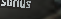
snnn aaa
“tOtAA tA
nrgrg rg
hehe Cehe n SSS s upup oriup
re re u re s mmm eee
TURN SEQUENCE
5
G a n ge r C hi e f t a i n
CREATURE
~
GIANT
Play: You may ready and fight with a neighboring creature. (That creature may be from any house.)
It takes two to fight, but more is better.
GFF8102©
Miss “Onyx” Censorius
Forrest Imel
033
Deck
The game is played over a series of turns. Players alternate taking turns until one player wins the game.
STEP 2: CHOOSE A HOUSE
Opponent’s Play Area
5
T h e Te rr o r
CREATURE
~
DEMON • KNIGHT
Play: If your opponent has no A, gain 2A.
“I once thought that these creatures could be redeemed. Now I know better.”
– Champion Anaphiel
GFF8102©
Miss “Onyx” Censorius
Matthew Mizak
101
Battleline
G a u nt le t o f Co m m a n d
ARTIFACT
ITEM
Action: Ready and fight with a friendly creature. (That creature may be from any house.)
“I said ‘take me to your leader’ and got a fist to the face.” – Captain Val Jericho
GFF8102©
Miss “Onyx” Censorius
Eric Kenji Aoyagi
022
Artifact
1
B a d P en n y
CREATURE
~
HUMAN • THIEF
Destroyed: Return Bad Penny to your hand.
A Bad Penny saved is a Bad Penny earned.
GFF8102©
Miss “Onyx” Censorius
 Nasrul Hakim
Nasrul Hakim
296
Forged Key
O n y x”
“
C e s n s s
o i
r M
i u s
Æmber
o n b
do a w r a B
h r
S s Dis
Identity Card
Unforged Keys
s |
effect you control combined with the Æmber in your Æmber pool to forge a key you must do so during Step 1.
Each turn consists of five steps:
1 Forge a key.
2 Choose a house.
3 Play, discard, and use cards of the chosen house.
4 Ready cards.
5 Draw cards.
The player taking a turn is referred to as the active player. The active player is the only player that can perform actions or make decisions; a player does not make any decisions when it is not their turn.
Each step is described in the following sections.
STEP 1: FORGE A KEY
If the active player has enough Æmber to forge a key during this step, they must do so. To forge a key, the active player spends Æmber from the Æmber pool on their identity card, returning it to the common supply. Then, that player flips any one of their key tokens over to its forged side, indicating that the key has been forged.
The default cost to forge a key is six Æmber. Some card abilities may increase or decrease this number.
No more than one key can be forged during this step each turn, even if the active player has enough Æmber to forge multiple keys.
Some cards have effects that allow Æmber on these cards to be spent when forging keys. If there is enough Æmber on cards with this
Each KeyForge deck is composed of three different houses, which are shown on the identity card. During this step, the active player chooses one of those three houses to activate, making it the active house for the remainder of the turn. This active house determines which cards the active player can play, discard from their hand, and use this turn.
After choosing a house, the active player has the option to take all cards in their archives and add them to their hand. (See “Archives” in the Glossary.)
If a player controls a card that does not belong to one of the three houses in their deck, they may (if they desire) choose and activate that house during this step instead of one of the three houses in their deck.
STEP 3: PLAY, DISCARD, AND USE CARDS OF THE CHOSEN HOUSE
PLAYING CARDS
The active player may play or discard any number of cards of the active house from their hand and may use any number of cards of the active house that are in play under their control. Eligible cards may be played, used, or discarded in any order.
ÆMBER BONUS
Many cards in the game have an Æmber bonus below the house icon.
A card’s house is determined by an icon in the upper-left corner. If the active house corresponds to a card’s icon, that card is eligible to be played, used, or discarded.
Rules for playing, discarding, and using cards are
described later.
First Turn Rule: During the first player’s first turn of the game, that player cannot play or discard more than one card from their hand.
Card effects can modify this rule.
A Brobnar Card
PLAY ABILITIES
The active player is permitted to play any number of cards that belong to the active house during step three of their turn.
When a card with an Æmber bonus is played, the first thing the active player does is gain that much Æmber. Each time a player gains Æmber
The active player readies each of their exhausted cards.
The active player may not play, use, or discard cards that aren’t of the active house unless specified by a card ability.
STEP 4: READY CARDS STEP 5: DRAW CARDS ITEMCARD TYPES
Action: Ready and fight with a friendly creature. (That creatureThmeareybareefrfomur atynpyes of cards in the game: action cards, artifacts, creatures, and upgrades. There are different rules describing how each
“I said ‘take me to your leader’ and got a fist to the face.” – Captain Val Jericho
ACTION CARDS
When an action card is played, the active player resolves the card’s “Play:” ability and, after resolving as much of the ability as possible, places the card in their discard pile.
Some cards have a bold “Play:” ability. Such abilities resolve after the card’s Æmber bonus is collected, if it has any, and after the card enters play.
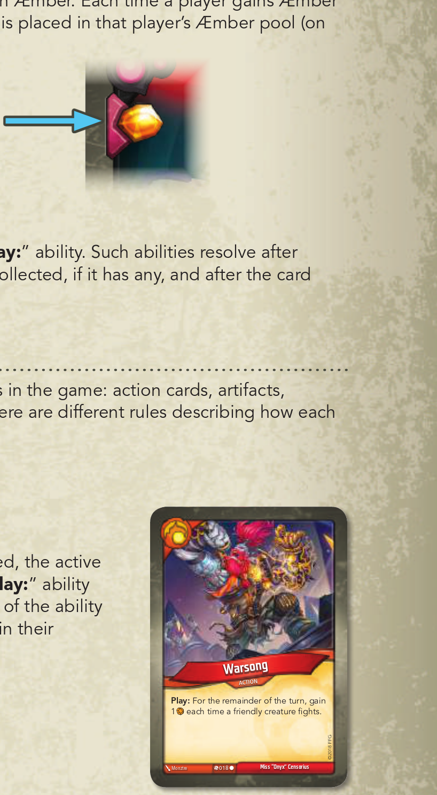(for any reason), the Æmber is placed in that player’s Æmber pool (on their identity card).
card type is played.
Æmber Bonus
©2018FFG
Miss “Onyx” Censorius
The active player draws cards from the top of their deck until they have six cards in their hand. After a player completes this step, their turn ends.
ARTIFACTS
If the active player has more than six cards in hand, they do not discard down to six.
If a player needs to draw cards (during this step or at any other time) and cannot because their deck is empty, that player shuffles their discard pile to reset their deck, and then continues to draw.
When a player’s turn ends, if that player has enough Æmber in their pool to afford a key, the player announces “Check!” so that their opponent knows the forging of a key at the start of that player’s next turn is imminent.
Artifacts enter play exhausted and are placed in a row in front of the player but behind that player’s battleline, which is explained on the next page. Artifacts remain in play from turn to turn.
CREATURES
UPGRADES
Creatures enter play exhausted and are placed in the front row of the active player’s play area. This row is referred to as the battleline. Creatures remain in play from turn to turn, and they each have power and armor values that they use to resolve fights, which are described later.
Power Value
Creature
Each time a creature enters play, it must be placed on a flank—at the far left or the far right of its controller’s battleline. Each time a creature leaves play, shift the battleline inward to close the gap.
Upgrades enter play attached to (i.e., partially overlapped by) a creature chosen by the player who controls the upgrade. Each upgrade remains in play from turn to turn and modifies the card to which it is attached.
If the card to which an upgrade is attached leaves play, the upgrade is discarded.
If an upgrade cannot attach to a card in play, the upgrade cannot enter play.
Pr ote ct
th
e We a k
UPGRADE
The Protect the Weak upgrade is attached to the creature, Quixo the “Adventurer.”
Left Flank
5 ~ GIANT Fight: Gain 1A. “I mean, I think it’s a head...” Miss “Onyx” Censorius Nicola Saviori 035 | 3 ~ DEMON Reap: Your opponent discards a random card from their hand. Miss “Onyx” Censorius Gabriel Rubio 102 |
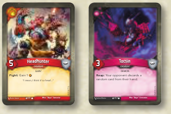Right Flank
DISCARDING CARDS
The Battleline
The active player can discard from their hand any number of cards from the active house during step three of their turn. Cards are discarded one at a time, at any point throughout this step. This lets players remove cards that they do not want to play from their hand, freeing up space to draw more cards at the end of the turn.
USING CARDS
The active player can use any number of cards from the active house that they have in play during step three of their turn. Depending on a card’s type, the active player is able to do different things when using that card.
UPGRADES
5 ~ GIANT Fight: Gain 1A. “I mean, I think it’s a head...” Miss “Onyx” Censorius Nicola Saviori 035 | 3 ~ DEMON Reap: Your opponent discards a random card from their hand. Miss “Onyx” Censorius Gabriel Rubio 102 |
An upgrade modifies the creature it is attached to and is not used independently of that creature.
USING ARTIFACTS
There are two types of abilities that enable a player to use an artifact: “Action:” abilities and “Omni:” abilities.
Creatures enter play on the flank of the battleline.
When a player uses an artifact, they exhaust the card and then resolve its abilities.
A player can only use an “Action:” ability if it is on a card that belongs to the active house.
A player can resolve an “Omni:” ability even if it is on a card that does not belong to the active house.
Some artifacts require that they be sacrificed as part of the cost of using them. When an artifact is sacrificed, it is placed in its owner’s discard pile. A player must still exhaust such an artifact when using it.
Artifacts cannot be used to reap or to fight.
If a creature leaves play, the battleline is shifted inward.
USING CREATURES
OMNI
When a player uses a creature, that player must exhaust the creature, and the player has the option to reap, fight, trigger the creature’s
“Action:” ability, or trigger the creature’s “Omni:” ability. Any card effect that causes a creature to fight, reap, trigger its “Action:” ability, or to trigger it’s “Omni:” ability is causing that creature to be used.
REAP
DAMAGE AND ARMOR
Any ready creature of the active house may reap. When a creature is used to reap, the creature exhausts and its controller gains 1 Æmber for their Æmber pool. Then, all “Reap:” abilities the creature has, if it has any, resolve.
FIGHT
Any ready creature of the active house may fight. When a creature is used to fight, the creature exhausts and its controller chooses one eligible creature controlled by the opponent as the target of the attack. Each of the two creatures deals an amount of damage equal to its power (the value to the left of the card’s title) to the other creature. All of this damage is dealt simultaneously. After the fight resolves, if the creature that is being used to fight survives, all “Fight:” abilities the creature has, if it has any, resolve.
CARD ABILITIES
Unless otherwise specified by the ability, the active player makes all decisions while resolving an ability.
A creature cannot fight if there is no enemy creature that can be chosen as the target of the attack.
ACTION
RESOLVE AS MUCH AS YOU CAN
Any ready creature of the active house may trigger its “Action:” ability, if it has one. When a creature is used to trigger its “Action:” ability, the creature exhausts and all “Action:” abilities the creature has resolve.
Any ready creature may trigger its “Omni:” ability, if it has one, even if it does not belong to the active house. When a creature is used to trigger its “Omni:” ability, the creature exhausts and all “Omni:” abilities the creature has resolve.
When a creature is dealt damage, place an amount of damage tokens equal to the amount of damage dealt on the creature. If a creature has as much or more damage on it as it has power, the creature is destroyed and placed on top of its owner’s discard pile. If a creature has an armor value
(to the right of the card’s title), the armor prevents that much incoming damage each turn. (For more details, see “Armor” in the Glossary.)
When a creature leaves play, any Æmber on that creature is gained by the opponent. (See “Capture” in the Glossary.)
For details on specific terminology that can be found in card ability text, see the Glossary.
While resolving a card ability, resolve as much of the ability as can be resolved, and ignore any parts of the ability that cannot be resolved.
Example: Aaron plays the card Anger (COTA 001), that reads “Play: Ready and fight with a friendly creature.”, and chooses his friendly Snufflegator (COTA 358) to resolve the ability on. However, the Snufflegator is already ready, so Aaron ignores that part of the ability and just uses his friendly Snufflegator to fight.
USING CARDS VIA OTHER CARD ABILITIES
If a card ability allows a player to play or use another card (or to fight or to reap with a card), the chosen card may belong to any house unless the ability specifically states otherwise.
When using a card via a card ability, any other requirements of using the card (such as exhausting to reap, fight, or resolve its “Action:” ability) must be observed, or the card cannot be used.
Players can only use cards they control, unless a card ability specifically states otherwise.
THE RULE OF SIX
Occasionally, a situation may emerge in which, through a combination of abilities, the same card may be played or used repeatedly during the same turn. A player cannot play and/or use the same card and/or other copies of that card (by title) more than six times during a given turn.
CONSTANT ABILITIES
If a card has an ability that does not have a boldfaced precursor, the ability is a constant ability that is active so long as the card remains in play and meets all conditions specified by the ability.
Constant abilities on a card are active even while that card is exhausted.
Applying the effects of a constant ability is not considered using a card and therefore does not cause the card to exhaust.
The game text on Mother is an example of a constant ability.
CHAINS
CHAIN HANDICAPS (OPTIONAL)
Chains represent supernatural bindings that are occasionally placed onto specific Archons by the Architects: sometimes in an effort to better challenge the Archon to grow and overcome greater adversity, and other times to penalize the Archon for breaking a rule or a piece of Crucible etiquette.
A player may gain chains through card abilities during a game. When a player gains chains, that player increases their chain tracker by the number of chains gained.
SUGGESTIONS FOR ASSIGNING CHAINS
Number of
Chains
CHAIN BIDDING
Each time (including during setup) a player with one or more chains would draw one or more cards to refill their hand, that player draws fewer cards (based on their current chain level, see below) and then sheds one chain by reducing their chain tracker by one.
The more chains a player has, the greater the card penalty becomes.
Chains 1–6: draw 1 fewer card.
Chains 7–12: draw 2 fewer cards. Chains 13–18: draw 3 fewer cards. Chains 19–24: draw 4 fewer cards.
Example: Tori has been assigned seven chains. During setup, Tori will draw two fewer cards and shed a chain. Then, the next six times Tori refills her hand, she will draw up to five cards and shed another chain.
After all of her chains have been shed, Tori will draw to the standard hand size.
WHAT’S NEXT
When playing a game between a weaker deck and a stronger deck,Âplayers may use chains as a means to handicap the stronger deck. Chains are used when players want a fair game between two known decks rather than a potentially unfair competition between decks that aren’t known. When playing with new decks, or competing in a tournament, players will not use this handicap.
When the players have a sense that a particular deck is stronger than the opposing deck, start it with four chains. From then on, every time the chained deck wins three games in a row against that opposing deck, adjust the number of chains up by one, and if it loses three games in a row, adjust the number of chains down by one. Â
As a player plays more games with their collection, the number of chains assigned to a deck will fluctuate up and down based on the matchup and how well the deck has performed against the opposing deck.
If players are reasonably familiar with two decks they can ignore the suggested number of chains, and instead bid a number of chains for the right to use a particular deck.
Example: Terry and Julie decide to play Mother Mahospot against Chancellor Fisher. Mother Mahospot is a deck that both players are very familiar with, feel is quite strong, and enjoy playing. Chancellor Fisher is a newer deck, that the players are not as comfortable playing. The above guidelines suggest they begin with four chains on Mother Mahospot. Julie looks at Fisher, considers a moment, and says, “I’ll play Mother Mahospot at five.” Terry raises to six. Julie goes to seven. Terry decides to let her play it at seven, and plays Chancellor Fisher.
You are now familiar with the basic rules of the game. The next section of this book contains a Glossary of advanced concepts that can be referenced while playing or interpreting card abilities.
An introduction to the KeyForge setting, with two short stories and an introduction to each of the houses in the game, can be found on page 14.
GLOSSARY
This Glossary includes a number of concepts and terms players may encounter while playing the game, in alphabetical order. Instead of reading this section from beginning to end, players are encouraged to only look up new concepts as they are encountered during play.
ABILITY, CARD ABILITY
ASSAULT (X)
When a creature with the assault (X) keyword attacks, it deals damage equal to its assault value (i.e., “X”) to the creature it is fighting before the fight resolves. (The active player chooses whether this occurs before or after other “Before Fight” effects and keywords.) If this damage destroys the other creature, the rest of the fight does not occur.
An ability is the special game text a card contributes to the game.
Unless an ability explicitly references an out-of-play area (such as a hand, deck, archives, or discard pile), that ability can only interact with cards that are in play.
ACTION ABILITY
ATTACK, ATTACKER, ATTACKING
See “Fight” on page 10.
To use an “Action:” ability during their turn, the active player must exhaust the card. The ability then resolves.
ACTIVE HOUSE
BATTLELINE
The battleline is the ordered line of creatures a player controls in play.
See “Creatures” on page 6.
The active house is the house that the active player has chosen for the current turn.
ACTIVE PLAYER
BEFORE
The active player is the player taking the current turn. The active player makes all necessary decisions for all card abilities or timing conflicts that need to resolve during their turn.
ÆMBER
CANNOT VS MUST/MAY, CANNOT VS PERMISSIVE
Æmber is tracked by Æmber tokens, and is used to forge keys.
Only Æmber in your own Æmber pool is considered “yours” for the purpose of card effects.
See also: Capture, Keys, Reap, Steal.
ARCHIVES
Æmber Token
A player’s archives is a facedown game area in front of that player’s identity card. Card abilities are the only means by which a player is permitted to add cards to their archives. During step 2 of a player’s turn, after they select an active house, the active player is permitted to pick up all cards in their archives and add those cards to their hand.
Cards in a player’s archives are considered out of play.
CAPTURE
A player may look at their archives at any time. A player is not permitted to look at an opponent’s archives.
If the ability instructing a player to archive a card does not specify where the card is archived from, the archived card comes from that player’s hand.
ARMOR
Some creatures have an armor value to the right of the card title. Armor prevents an amount of damage equal to the armor value that the creature would take each turn. Armor prevents damage before it is actually dealt. For example, if a creature has two armor and is dealt one damage, that damage is instead prevented by the armor, leaving the creature with one armor that can prevent damage left for the rest of the turn. If the creature is later dealt three more damage during that turn, one damage is prevented and the other two damage are dealt to that creature.
CHAIN, CHAINS
Some card abilities cause a player to gain one or more chains. If a player gains chains, that player increases their chain tracker by the number of chains gained.
If a creature gains armor, the gains are additive and accumulate on top of the creature’s printed armor value.
If a creature gains armor during a turn, the gained armor does not prevent damage already dealt that turn. If a creature loses armor during a turn, it is not retroactively dealt damage that was already prevented by the armor.
If a creature loses any amount of armor, it loses armor that has been used to prevent damage this turn before it loses armor that has not been used to prevent damage this turn.
If a creature has a “~” symbol in its armor field, the creature has no
armor. Such creatures may gain armor through card effects.
If a creature with the assault (X) keyword gains another instance of the assault (X) keyword, the two X values are added together.
If the word “before” is used in an ability (for example, “Before Reap:” or “Before Fight:”), that ability resolves before resolving the game effect of the reap or fight (but after the card exhausts, if exhausting is required to use the card).
If two card effects are simultaneously instructing a player that they “cannot” do something and that they “must” or “may” do the same thing, the “cannot” effect takes precedence.
Example: Anna controls a Pitlord (COTA 093) which reads “While Pitlord is in play you must choose Dis as your active house.” On their next turn Anna’s opponent plays Restringuntus (COTA 094) which reads “Play: Choose a house. Your opponent cannot choose that house as their active house until Restringuntus leaves play.” and chooses Dis for its ability. On Anna’s next turn, she both must and cannot choose Dis, but because cannot takes precedence over must, she only cannot choose Dis and must choose one of her other houses instead.
If two card effects are simultaneously instructing a player that they cannot do something and that they may do something, the “cannot” effect takes precedence.
Captured Æmber is taken from an opponent’s Æmber pool and placed on a creature controlled by the capturing player. Players may not spend captured Æmber.
When a creature with Æmber on it leaves play, the Æmber is placed in the opponent’s Æmber pool.
Unless otherwise specified, Æmber is placed on the creature that captured it.
If a player has at least one chain when refilling their hand and would draw cards based on the number of remaining cards in their hand, they draw fewer cards according to the chart below. Then, they shed one chain by reducing the number on their chain tracker by one.
Chains 1-6: draw one fewer card.
Chains 7-12: draw two fewer cards. Chains 13-18: draw three fewer cards. Chains 19-24: draw four fewer cards.
While drawing an initial hand of cards during setup, if a deck has chains assigned to it, the chains also apply to the initial hand of cards drawn as if you were refilling a hand during step 5. A chain is shed for this initial draw as per the standard rules.
FIGHT
See ”Chains” on page 8.
CONTROL
A player owns the cards that begin the game in their deck. When a card is played, it enters play under the control of the active player.
A player can take control of an opponent’s card. When this happens, that card is placed in the new controller’s play area. If it is a creature, it is placed on a flank of the new controller’s battleline. If multiple effects that take control of a card are used on the same card, the most recent effect takes precedence.
“FIGHT WITH”
When a player uses a creature to fight, the player exhausts the creature and chooses an opponent’s creature. Both creatures deal an amount of damage equal to their power value to the opposing creature in the fight, and both are “fighting” for the purposes of card effects.
A creature used to fight is said to be “attacking” and can be referred to as “the attacker” during that fight.
If the attacker is not destroyed, all “Fight:” abilities on the attacking creature then resolve. If either creature in a fight has a constant ability referencing the end of the fight (example: “after an enemy creature is destroyed fighting this creature…”), the creature must survive the fight to resolve the ability. Only the attacker can trigger “Fight:” abilities.
If a player takes control of a card that belongs to a house not in the new controller’s deck, they can make that house the active house during step 2 of their turn.
If a card that has changed control leaves play for any reason, it moves to its owner’s appropriate out-of-play zone.
COST, AT CURRENT COST
FLANK
The base cost to forge a key is six Æmber. This cost may be modified by card abilities. The modified cost is referred to as the current cost.
DAMAGE
Damage a creature has taken is tracked by placing damage tokens on the creature. If a creature has an amount of damage on it equal to or greater than its power, the creature is destroyed. Damage on a creature does not reduce its power. If multiple creatures are damaged by a single effect, that damage is dealt simultaneously.
FORGE
For details on forging keys, see page 4.
If an ability instructs a player to “fight with” or “ready and fight with”
a creature, the ability is granting the player permission to use the designated creature to fight. The fight is resolved following the standard rules for fighting, against a creature controlled by the opponent.
The creatures on the far right and far left of a player’s battleline are on the flanks of the line. A creature in this position is referred to as a flank creature. Any time a creature enters play or changes control, the active player chooses which flank of its controller’s battleine it is placed on.
If a battleline only has one creature in it, that creature is on both the left and right flank and is considered a flank creature.
For more details on damage and combat, see page 7.
DESTROYED
FRIENDLY
If a card ability refers to a “friendly” game element, it refers to an element currently under the control of the same player.
When a card is destroyed, it is placed in its owner’s discard pile. If multiple cards are destroyed simultaneously they are put into the discard pile(s) simultaneously and any non-”Destroyed:” abilities cannot trigger. (The active player determines what order the destroyed cards are put into the discard pile(s).)
HAZARDOUS (X)
When a creature with the hazardous X keyword is attacked, it deals X damage to the attacking creature before the fight resolves. (The active player chooses whether this occurs before or after other “Before Fight”
If a card has a “Destroyed:” ability, the effect automatically resolves immediately before the card would be destroyed, which is also before it leaves play.
DISCARD PILE
When a card is destroyed or discarded, it is placed on top of its owner’s discard pile. The cards in each player’s discard pile are open information, and may be referenced at any time.
HEAL
If an ability “heals” a creature, remove the specified amount of damage from the creature.
effects and keywords.) If this damage destroys the other creature, the rest of the fight does not occur.
If a creature with the hazardous (X) keyword gains another instance of the hazardous (X) keyword, the two X values are added together.
The order of cards in a player’s discard pile is maintained during play, unless a card ability causes this order to change.
When a player runs out of cards in their deck and are required to draw, they shuffle their discard pile to create a new deck.
ELUSIVE
The first time a creature with the elusive keyword is attacked each turn, it is dealt no damage and deals no damage to the attacker in the fight.
HOUSE CHOICE
Elusive only stops damage that would be dealt by each creature’s power; damage dealt by keywords or other abilities still applies.
END OF TURN
End of turn effects are resolved when a player’s turn is over—after step 5, the “Draw Cards” step.
ENEMY
If a card ability refers to an “enemy” game element, it refers to an element currently controlled by the opponent.
If an ability “fully heals” a creature, remove all damage from the creature.
Any creature can be chosen to be healed by a card effect that heals, even if it does not have any damage on it. However, if no damage is removed from the creature, it is not considered to have been “healed” for the purpose of card effects that reference healing.
Each turn, a player must choose one of the three houses indicated by their identity card, if able. Some card abilities may restrict a player’s house choice.
If a player has gained control of a card that does not belong to one of their three houses, that card’s house becomes an eligible choice for that player while the player retains control of the card.
If there is no legal choice of house, the player plays the turn with no active house.
If a player is faced with two (or more) “must choose” mandates, the player may choose either of those options.
“IF YOU DO” AND “IN ORDER TO”
MAY
If an ability includes the word “may,” the text that follows “may” is optional. If a player chooses to resolve a “may” ability, the player must resolve as much of the ability as they are able.
If an ability includes the phrase “if you do” or “in order to,” the player referenced by the ability must successfully and completely resolve the text that precedes that phrase before they can resolve or perform the text that follows that phrase. In other words, if the first part of the ability is not successfully and completely resolved, that which follows the phrase does not resolve or cannot be performed.
KEYS
MOST POWERFUL
A reference to the “most powerful” creature refers to the creature in play with the highest power. If there are multiple creatures that qualify, each is considered “most powerful.”
If an ability requires the selection of a single most powerful creature, and multiple creatures are tied, the active player chooses among the tied creatures.
The first player to forge all three of their keys immediately wins the game.
The color of a key has no impact on the game. Future card abilities may reference keys of a specific color.
For details on forging keys, see page 4.
LEAST POWERFUL
A reference to the “least powerful” creature refers to the creature in play with the lowest power. If there are multiple creatures that qualify, each is considered “least powerful.”
If an ability requires the selection of a single least powerful creature, and multiple creatures are tied, the active player chooses one.
Groups of “Least Powerful”
If a card effect refers to a group of “the X least powerful” creatures, it is referring to a number of creatures in play that have an equal or lower power than every creature that does not belong to that group. If there are not enough creatures with the lowest power to fulfill the group, then a creature with the next lowest power is eligible to be considered a part of the group. This continues until the group has been filled or there are no creatures remaining. If at any point multiple creatures are tied at the same power that could qualify them for the group, but there is not enough space in the group for each tied creature, the active player chooses which of the tied creatures are part of the group.
LEAVES PLAY
MULLIGAN
If a card that is in play leaves play (is returned to hand or deck, destroyed, discarded, archived, or purged), all non-Æmber tokens and status cards on the card are removed, all upgrades on the card are discarded, and all lasting effects applied to the card expire.
When a card moves from an in–play zone to an out-of-play zone in which the identities of cards are hidden from the opponent (such as a player’s hand, deck, or archives), any pending effects that are currently or about to interact with that card no longer do so, unless a card effect explicitly states that it interacts with that zone.
NEIGHBOR
Groups of “Most Powerful”
If a card effect refers to a group of “the X most powerful” creatures, it is referring to a number of creatures in play that have an equal or higher power than every creature that does not belong to that group. If there are not enough creatures with the highest power to fulfill the group, then a creature with the next highest power is eligible to be considered a part of the group. This continues until the group has been filled or there are no creatures remaining. If at any point multiple creatures are tied at the same power that could qualify them for the group, but there is not enough space in the group for each tied creature, the active player chooses which of the tied creatures are part of the group.
Example: Tom plays the action card “Three Fates (COTA 071) which reads, “Play: Destroy the 3 most powerful creatures.” In play there is an 8 power creature, a 7 power creature, and two 5 power creatures. Tom must select 3 creatures to fill the group and must choose the 8 power creature as the first creature for the group. There are no other creatures in play that are tied for most powerful. In order to fill the group the next most powerful creature is selected, the 7 power creature. After this creature is selected, again there is no creature in play that is tied at 7 power, so a creature from the next highest power must be selected. Tom thus must choose one of the 5 power creatures to complete the group.
During setup, each player, starting with the first player, has one opportunity to mulligan their starting hand. This is done by shuffling the starting hand back into the deck and drawing a new starting hand with one fewer card in it.
After a player chooses to mulligan, that player must keep the new starting hand.
If a player is using a deck that has chains applied to it at the start of the game and takes a mulligan, they do not shed a chain from the mulligan, but do draw one fewer card than they had before the mulligan as per the normal mulligan rules.
If a creature with Æmber on it leaves play, the Æmber is placed in the opponent’s Æmber pool. If a non-creature card with Æmber on it leaves play, the Æmber is returned to the general token pool.
When a card leaves play it is always put into its owner’s appropriate out-of-play zone, unless a card effect explicitly states that it interacts with that zone.
OMNI
If a card has a “Leaves Play:” ability, the effect happens automatically immediately before the card leaves play.
MAVERICK
This symbol indicates that a card is a maverick. A maverick is an extremely rare instance of a card that has left its standard house and is now a part of a new house. For all game purposes, treat a maverick as belonging to the house printed on its graphic template.
OFF HOUSE
The creatures to the immediate left and right of a creature in a player’s battleline are its neighbors.
The active player may trigger any ”Omni:“ abilities under their control during any of their turns, even if the card with the ”Omni:“ ability does not belong to the active house. When a player uses a creature to trigger its “Omni:” ability, the player exhausts the creature and then resolves the “Omni:” ability.
An off house card is any card that belongs to a house that is not the active house.
OPPOSING
REPEAT
When a creature is involved in a fight (either because it was used to fight, or because it was attacked by another creature), the other creature in the fight is the opposing creature.
PAY
If a player must pay Æmber to an opponent, the Æmber is removed from the paying player’s pool and added to the opponent’s pool.
PLAY
When a card has a “Play:” ability, the effect occurs any time the card is played. For creatures, artifacts, and upgrades, the ability resolves after the card enters play. For action cards, the ability resolves, and then the card is immediately placed in its owner’s discard pile.
RETURN
When captured Æmber is returned, it is placed in the opponent’s Æmber pool.
If an ability “plays” a card from a source other than hand, “Play:” abilities on the card resolve. If an ability “puts” a card “into play,” “Play:” abilities on the card do not resolve.
POISON
SACRIFICE
When a player is instructed to sacrifice a card, that player must discard that card from play.
When a card is sacrificed, that card is considered to have been destroyed, and any “Destroyed:” abilities the card has resolve.
If card text instructs players to repeat an effect, the entirety of the effect resolves again including the text to repeat the effect. If the card that is creating a repeating effect is removed from play, the effect can no longer repeat.
Note: Repeating an effect does not interact with the Rule of Six (see page 7,) as the Rule of Six only applies to playing or using cards, not triggering their effect multiple times.
See also “Preceding.”
Any damage dealt via the power of a creature with the poison keyword during a fight destroys the damaged creature. This occurs when the damage is successfully applied to the opposing creature.
SEARCH
Poison has no effect if all of the damage is prevented by armor or prevented by another ability—poison only resolves when one or more damage is successfully dealt.
Poison refers only to damage that would be dealt by the creature’s power, not by damage that is dealt by keywords or other card abilities.
POWER COUNTER +1, POWER STATUS CARD
SELF-REFERENTIAL TEXT
When a player searches a game area (such as a deck), that player looks at all the cards in the specified area without showing those cards to the opponent. A player may choose to fail to find the object of a search.
If an entire deck is searched, the deck must be adequately shuffled upon completion of the search.
If a discard pile is searched, the cards are kept in the same order.
When a creature is given a “+1 power counter,” one such status card is placed on the creature. For each of these cards that is on a creature, that creature’s power is increased by one.
PRECEDING, REPEAT THE PRECEDING
SKIRMISH
If card text instructs players to repeat a preceding effect, the entirety of the effect before the text providing the instruction to repeat resolves again.
Note: Repeating an effect does not interact with the Rule of Six (see page 7), as the Rule of Six only applies to playing or using cards, not triggering their effect multiple times.
PURGE
SPLASH
When a card is purged, it is removed from the game and placed facedown beneath its owner’s identity card. Purged cards no longer interact with the game state in any manner.
RARITY
STEAL
A card’s rarity symbol can be found at the bottom of the card, near the collector number. A card’s rarity (common, uncommon, rare, or special)
is used by the deck-generation algorithm to determine how frequently it will appear in decks. Special cards have a different type of distribution and do not obey the game’s standard rarity rules.
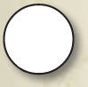Common
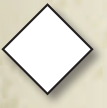Uncommon Rare
Special
STUN, STUN STATUS CARD
When a creature becomes stunned, place a stun status card on it. The next time that creature is used, the only effect of it being used is the creature exhausts and the stun status card is removed instead of anything else happening. The creature does not reap or fight, and any “Reap:,” “Fight:,” or “Action:” abilities on the creature do not resolve.
When a player uses a creature to reap, the player exhausts the creature, gains 1 Æmber for their Æmber pool, and then all “Reap:” abilities on the creature resolve.
REAP
If a card effect causes a creature to be used while it is stunned, the creature is exhausted and the stun status card is removed, just as if the creature had been used normally.
If a card’s ability refers to its own title, that reference is only to itself and not to other copies of the card.
When a creature with the skirmish keyword is used to fight, it takes no damage from the opposing creature when the damage from the fight is dealt.
This applies only to damage that would be dealt by the opposing creature’s power, not by damage that is dealt by keywords or other card abilities.
When an ability deals damage to a creature “with splash damage,” the splash damage is dealt to each of the target creature’s neighbors.
When an ability steals Æmber, the stolen Æmber is removed from the opponent’s Æmber pool and added to the Æmber pool of the player resolving the steal ability.
If an ability steals more Æmber than a player has remaining in their pool, the ability steals only the amount remaining in the pool.
Constant abilities and abilities that do not require the creature to reap, fight, or be used are still active.
If a stunned creature is attacked, it still deals damage to the attacking creature during the fight.
While a creature is stunned, it cannot have another stun status card placed on it. If an effect attempts to stun a stunned creature that effect does not stun the already stunned creature.
SWAP
If two game elements are swapped, they exchange places with one another.
When two creatures are swapped, they exchange positions. This means that each takes the position in the battleline of the other. The two creatures swapped must always be controlled by the same player.
If cards from two distinct game areas are swapped (such as a card in play and a card in hand), the cards switch game areas.
TAUNT
If a creature has the taunt keyword, any of its neighbors that do not have the taunt keyword cannot be attacked by an enemy creature that is being used to fight.
In the battleline, taunt creatures are slid slightly forward to indicate their presence to the opponent.
6
1
KNIGHT • SPIRIT
Taunt. (This creature’s neighbors cannot be attacked unless they have taunt.)
“Steel thyself, knave. To harm them you must first defeat me.”
©2018FFG
Radiant Argus the Supreme
Forrest Imel
239
C ha mp i o n An ap l
CREATURE
h tu ie re
3
~
HUMAN • SCIENTIST
Skirmish. (When you use this creature to fight, it is dealt no damage in return.)
Fight: Draw a card.
“...I’ll leave this part out of the memoir.”
©2018FFG
Radiant Argus the Supreme
David Auden Nash
144
Qu
ixo
t
he
“A
dv
en r”
CREATURE
Champion Anaphiel (center) has the taunt keyword, and is pushed slightly forward in the battleline.
“THIS WAY”
If an ability refers to an effect that occurred “this way,” it is referring to an effect that was produced by the same resolution of that same ability.
TURN
A turn consists of one player performing the five steps detailed in the game’s turn sequence, which are:
1 Forge a key.
2 Choose a house.
3 Play, discard, and use cards of the chosen house.
4 Ready cards.
5 Draw cards.
TRAITS
Traits are descriptive attributes (such as “Knight” or “Specter”) that may be referenced by other cards. Traits are listed at the top center of a card’s text box.
Traits have no inherent game effect, but may be referenced by card abilities.
UNFORGE
If a previously forged key is “unforged,” flip the key token to its unforged side. The key no longer counts toward its controller’s victory condition and must be forged again to win the game.
USE
See “Using Cards” on page 6.
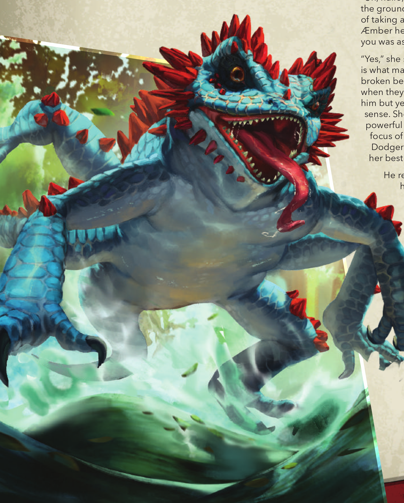THE LUCKY SIDE
by Daniel Lovat Clark
Dodger raced up the knife-edge of the crystal spur and ran himself right out of room. Behind, an angry mountain of scales, teeth, and hate—ahead a fall to certain death. So Dodger hurled himself out into Luck-knew-what, felt his hands catch on a rough tangle of razorwhip vines, and swung himself out and up as the crystal shattered behind him.
The toothy thing behind him let out a roar so loud that Dodger’d swear it gave his swing just the fling it needed to land him on the far side of the ravine. He teetered on that edge, saw the glimmering spears of the crystal canyon below, the grand sweep of the golden plains beyond, the shining swamp, the shadow of the Sanctum above, till he finally tottered off his teeter onto the Lucky side of things.
Safe. For a moment.
He took a deep breath and fiddled with his damn cloak. It was out of Æmber. No fading into the shadows for Dodger, not now anyhow. “Ah, it’s no fun when it’s easy anyway,” he muttered, glancing down into the ravine. The teeth with legs—too many legs—had scrambled down the cliff face and reared up, snuffling the sky with its scaly serpentine snout.
“What did you do, tiny?” Valdr’s voice boomed with laughter as she stepped to the edge of the cliff, watching the beast scrabble forward. Dodger looked up, and up, and up, two or three Dodgers high to where the Brobnar giant’s head was haloed by the sun far above.
He flashed his best grin, his getting-out-of-trouble grin, his teeth white in the shadows of his inky-dark face, like a flashing knife in the shadows proper.
“Yes,” she said. “But the material alone isn’t enough, Dodger. Courage is what makes this key.” She reached out one perfect finger to touch the broken beast’s broken snout. Dodger wondered what the others saw when they looked at her, at Onyx. To him, she was a vision, an elf like him but yet unlike, taller, radiant with light. Breath-taking, in the literal sense. She had some of the strength of Valdr’s Brobnar giants, too, powerful arms, broad shoulders…but the same dispassionate, terrible focus of the worst of the demons of Dis. When she looked at him, Dodger wasn’t certain if he was a bug on a pin in her collection, or her best earner, or her next meal.
“Well its spines are Æmber, ain’t they?” said Dodger, flicking one purple-black finger to where the crystalline spines piercing through its scales glowed with a blood-red light in the gloom of the ravine. “And herself needs Æmber, she said.”
“And you’ve brought it straight to us,” Valdr said as the thing began climbing the rock wall toward them, all scrabble and snarl. “How thoughtful.” She lifted her rocket-hammer and thumbed the catch, wak-ing the engine that grumble-mumbled within its massive steel head. She frowned as Dodger slipped behind her, all innocence, ma’am. “What is it, do you know?”
“Well, it’s a snufflegator, ain’t it,” said Dodger.
“So you don’t know,” Valdr replied. As the snufflegator streaked over the edge of the cliff, teeth-and-roar first, she brought her hammer down, a thunderbolt on its skull, bang! It twitched once, then lay still. “Gather that Æmber,” Valdr said, turning to go. “And you’re welcome.”
Dodger giggled and extended his wrist-knife as he crouched by the thing’s dead head. Maybe he could skim a little Æmber off the top, recharge his cloak, spare a little for his guild back home? The Archon would never miss it, would she, wouldn’t grudge Dodger a little taste of the honey in the pot? He dug at the first spine, feeling it warm and singing beneath his touch. But before he could decide whether to slip it into a hidden pocket or not, she was there: Miss “Onyx” Censorius, the Archon herself, leaning over him, as curious and beautiful and impossi-ble as ever.
“Uh, hullo, m’lady,” Dodger managed, placing the Æmber spine on the ground next to him and starting on the next and never dreaming of taking a little of his own out, not faithful Dodger, no. “Plenty of good Æmber here. Should be more’n enough to forge you one of them keys you was asking for.”
He realized she was still talking. “And for Courage, we must first have Fear.” She stood, gathering up the last of Dodger’s
Æmber spines, then tucked one into the inside pocket of his coat. “Be brave, Dodger. For me?” She smiled and Dodger nodded, dumbstruck.
“Brave about what?” he wondered, as the first of the snuf-flegator’s starving children squirmed free from its body, teeth-first…
THE CRUCIBLE
“I got a pretty good look as the Quantum was breaking apart on approach.
A massive planet, an unfinished shell above, and that world-piercing, impossible spire. And above even that, behind us—I think even from space, we may have been inside the thing.”
— Captain Val Jericho, United Stars Starship Quantum
“The Mintaran grub-ant has no concept that it is inside a terrarium, no awareness of the world outside. Some days, I wonder if I’m the grub-ant.”
— Quixo the “Adventurer”
The massive world at the heart of the universe. The melting-pot, where ten thousand times ten thousand worlds meld together, aliens and AIs and ancient societies thrust together in unexpected ways. They call it the Crucible.
No one knows when it was built, save to say “long, long ago.” No one knows who built it, except to say “the Architects.” And no one knows its purpose, unless it is truly only what it seems: a place to bring parts of every planet, every species, every culture in the galaxy together.
From the surface, it seems like any other planet. It has gravity (some-times more, sometimes less), an atmosphere (sometimes breathable, sometimes toxic). Plants, animals, mineral formations, ruins of civiliza-tions gone by—to walk on the Crucible is to explore not just one alien world, but all of them. From the floating cities of the Sanctum to the crystal forests of the Æmberwood, from the towering shoulders of Sleeping Giant Mountain to the quicksilver pools of Arygrum Bog, from the windswept red plains of Nova Hellas to the bottomless canyons of Echoing Deep, there is no end to the wonders the Crucible has to offer.
And the people! From a hundred thousand worlds and a hundred million cultures, all living shoulder-to-shoulder-to-tentacle across the Crucible. Whether in roving bands or quiet villages or bustling cities, towering fortresses or serene temples, merchants or brigands or kings or scientists, the people! With so many different species and cultures living side-by-side, the old nations and empires of the homeworlds are gone—mostly. The elves of the Shadows or the Brobnar tribes might still keep their own communities aloof, but they also walk the streets of the Crucible’s many cities, just like everyone else. The Martian Empire might be a bunch of conquering xenophobes, but their people still slip away to catch the latest Rolling Bugs concert just like everyone else. The innu-merable houses of the Crucible, many of them rose up on the Crucible itself, but even the ones that came from a homeworld, like the Shadows, now count aliens among their number. The Crucible changes everyone, given enough time.
If nothing else, it changes your perspective. Because above it all rises the Spire, that impossible tower that rises from the pole and climbs to space. And from the spire spreads, what? An unfinished layer of the Crucible? A mighty spaceport, reserved for the use of the Architects? Who can guess? But stare into the clear blue sky long enough, and you’ll swear you see the trusses and scaffolding of a world under con-struction. The Crucible, impossible and gigantic and artificial, and ever growing, ever evolving.
ARCHONS
“To a shy lad from a tiny village, it was like an angel had come down to walk among us. I was right, in a way, and yet terribly, terribly wrong.”
— Commander Remiel, Knight of the Sanctum
“You look at us and think: you are as unto a god, but we look at you and think: this marvelous being is something I can never truly understand. We are all here to learn from one another, whether in peace or in conflict. That must be the Crucible’s purpose.”
— Miss “Onyx” Censorius, Archon
Life on the Crucible came from elsewhere. This is widely understood, widely acknowledged. Disparate worlds, mashed together and nudged along by the robotic fairies that most assume are creations of the Architects, all kept in some sort of balance. Then what is unique to the Crucible?
The answer seems to be the archons. Child gods, or manifestations of a central AI, or transcended mortals, or beings of pure energy. No one knows. The archons themselves don’t know or won’t tell. But they travel across the Crucible, studying the people and animals they find, always eager to learn more about their surroundings.
The archons are strange beings, difficult for mere mortals to under-stand. They have bodies only when they choose to, existing at other times as a disembodied consciousness or glowing energy being. The only trait that they all seem to share is their ability to speak to all sentient beings. Otherwise, they are as diverse in appearance and char-acter as the Crucible itself.
Archons commonly seek out companions for their journeys, and they are always on the lookout for the mysterious vaults of the Crucible, secret caches of wisdom, power, or understanding that only the archons can access. To open a vault, archons must contest with one another in a race to gather the necessary æmber and forge the keys the vault requires. This contest has elements of a sacred ritual, a sporting event, and a bareknuckle back-alley brawl, all mixed together. The exchanges almost inevitably turn violent, but deaths are rare. In fact, thanks to the advanced technology and unusual abilities available to archons, most such contests are advantageous to their followers. When the archons successfully open a vault, they find within a treasure trove of wisdom, technology, and some undefinable energy that the archons absorb directly. Aside from this unique energy, the spoils of the vault are com-monly shared with the archon’s followers—a powerful incentive to join an archon’s company.
For some, the promise of such treasure is reason enough to follow an archon into danger, but others have nobler intentions. Traveling with an archon is always exciting, a never-ending cavalcade of the unexpect-ed. On the Crucible, “exciting” is often synonymous with “deadly,” but archons can possess powers and abilities to keep their followers (rela-tively) safe, from healing powers to the gift of foresight. If nothing else, the archon’s gift of tongues can let their followers meet peaceably with other tribes and nations with whom they would otherwise have no way to communicate. Archons of a more warlike bent may attract followers who wish to keep their communities safe, or who relish the chance to lash out against enemies known and unknown. There’s always someone willing to risk everything in service to such a powerful and enigmatic being.
And when the archons open enough vaults and move on, to wherever it is archons go, their followers are usually left better off for the experi-ence. And only rarely suddenly abandoned deep in a hostile part of the Crucible where they will surely meet their doom.
KEYS
I helped Miss Onyx forge her third key. It…did not go the way I thought. I knew it would be made of æmber, that much I got right, but I thought we would place it on my forge, strike a few blows with the hammer, get the shape of the stuff just so, and that would be that. But her ladyship couldn’t have been less interested in what it looked like.
She took the æmber, still glowing-hot, from my tongs. “This will do,” she said. “Now, we must teach this key to experience joy. What brings you joy, Valdr?”
I thought about that for a minute. “Those fluff pastries Dodger found in the last village,” I said.
“Those were delicious,” Miss Onyx agreed. “Let’s see if Dodger has any left.”
THE HOUSES OF THE CRUCIBLE
This section introduces the houses of the Crucible that players might encounter during play. Additional houses may reveal themselves in the future.
BROBNAR
Whether they’re descending from snowy mountaintops to raid, riding grumbling motorsteeds across the blast-ed wastes, or laughing in the rain on the stormy seas, the warclans of the Brobnar are always a fearsome sight. A varied people, each Brobnar warclan is ruled by the strongest—whether that strength is shown on the field of battle, in the Champion’s Ring, or demonstrated by sheer force of personality and brilliance.
SOCIETY
Although the oral traditions of the giants describe a journey from the mythical land of Vanhalla, most scholars believe that the Brobnar cul-ture as it exists today was created on the Crucible, perhaps through a merger of the early giants and the first goblin tribes they encountered. Through the centuries, the Brobnar have evolved their own unique identity, independent of any of the member tribes they have absorbed.
First, the Brobnar value strength above all. In Brobnar society, each is entitled only to what their strength allows them to take, and an oppo-nent or rival without the strength to defend their property has no claim to it. Second, Brobnar are very conscious of their image and the projec-tion of strength—to be seen as weak is the same as being weak. Third, the Brobnar love loud music, strong alcohol, and shiny things.
To the rest of the Crucible, the Brobnar are dangerous enemies and valuable allies. Some warclans extract tribute from their neighbors, and others hire themselves off as mercenaries. Many Brobnar spend time living with other peoples, showing off Brobnar strength and learning (sometimes painfully) about life on the Crucible. Every now and again, one learns the most valuable lesson of all: that as strong as they are apart, every giant, goblin, or other creature is stronger working togeth-er…and when this happens, the whole Crucible trembles!
Most Brobnar are giants, powerful humanoid creatures nearly 3 meters tall with mottled skin in a variety of shades. They tend to wear their hair in brightly-colored crests, with long beards for those who care to grow them, and adorn themselves with tattoos and sigils of their clan. The Gargantes clan, for example, decorates their bodies with blue tattoos to celebrate their escape from the Ice-Maze of the Robo-Sorcerer. (The Gargantes treasure horde also features the Skull of the Sorcerer, which looks almost exactly like a tin can.)
Long ago, a large population of small, clever goblins joined the Brob-nar people. They are mostly relegated to second-class, servant status due to their small size and perceived weakness, but goblins are a tough gritty breed, and a handful of them have risen as respected leaders and shamans even among the giants.
The Brobnar, on the whole, will accept anyone into their clans, so long as that person is strong-willed and eager to fight!
TECHNOLOGY
Although they seem brutish and simple to some more civilized peoples, Brobnar are great proponents of any technology that is loud, destruc-tive, or preferably both. A violent people prone to injury and misad-venture, they make widespread use of cybernetic replacements and augmentation. They favor weapons that allow them to engage their enemies directly and revel in their great strength, but even their axes, hammers, and smashing gauntlets are often enhanced with engines, rockets, and other innovations that make them louder and more pow-erful. (Also, in many cases, more dangerous to the user, but Brobnar don’t usually mind that.) Since they value strength, they use their æmber as a source of power for certain machines, or even adorn their bodies with it to make themselves stronger.
Brobnar goods are individually hand-made by artisans, with mini-mal existing industrial infrastructure. As such, they are made to last and an artisan whose products are durable, beautiful, and noisy can be as esteemed as any warrior. Brobnar also have a keen eye (and ear) for beauty…by Brobnar standards. Others may find their art and music to be, mainly, “loud.”
ARCHONS
Brobnar are an intensely physical people and find the more ethereal nature of the archons puzzling. If an archon wants the respect of the Brobnar, they must manifest physically and then display strength of either will or body, neither of which is generally difficult for archons. Once they have proven themselves, archons find that the Brobnar are loyal and excellent companions, jovial and direct. Many archons with Brobnar allies find themselves wearing physical bodies more and more often, enjoying the simple and universal pleasures of such a form.
DIS
There are stories told across the Crucible of terrible monsters that dwell in the space between worlds. These creatures burst forth from the ground to terrify innocent people, their capering imps stealing æmber and their powerful demons destroying any who would oppose them. Those unlucky or foolish enough to travel to their netherworld home, known as Dis, are never heard from again.
SOCIETY
The half-living demons, the stories continue, are creatures of the between-worlds and so they have no life, no pain, no joy to call their own. Instead, they must steal these things from the innocent people of the Crucible. They seek out the most extreme emotions and consume them for sustenance. Where there is great rage, there lurks a demon, stoking the fires of animosity and harvesting the emotions, the very soul, of the wrathful being. Greed, fear, suffering—all these emotions, the demons cause in mortal folk in order to harvest them and return them to their evil lairs.
TECHNOLOGY
The Theorists of Logos deride such tales as superstitious folly, and explain that the demons are merely parasitic beings that make their home in the suprastructure of the Crucible that divides this layer from the one below it. Emotionally numb due to the lack of stimulus in this space, the “demons” use the psycho-reactive properties of æmber to capture emotional and mental imprints of other residents of the Crucible, returning them to Dis for later study or perhaps recreational experience.
Dis machines are part sorcery and part high technology, and the demons infuse æmber into every facet of their devices so that they, too, can capture the emotions of their victims. The furnaces of Dis burn with intense heat, where their black iron is smelted, and “souls” (or imprint-ed emotions) are broken down into their core elements for demonic consumption. These same blasted æmber shards are then incorporated into the imps and other self-aware machines used by the demons, and sent out to gather more æmber and more souls.
The fact that these theories are exactly the same as the “superstitious” stories with fancier words is one those same Theorists dismiss as hooey, repeating the exact same explanation, only slower.
The demons of Dis are, despite the myths, creatures of flesh and blood, or at least skin (or insectile chitin) and ichor, in addition to the techno-logical nightmare-horror of their many cybernetic augmentations. It is not clear whether all demons are of the same species beneath their cryptic masks, or whether demonhood is bestowed upon various crea-tures through some sinister process. Volunteers to study the question are, understandably, in short supply.
The demons are served by imps, chaotic and often mischievous robotic beings, driven by an intelligence scarcely less frightening than their demonic masters.
The less said of humans who join the faction willingly, the better.
Even when not functionally required, Dis devices tend to have sharp edges, a scalding touch, spikes, and a host of other opportunities for the unwary to injure themselves.
ARCHONS
Archons are the only beings on the Crucible who can be said to truly communicate with the demons of Dis, and many of them find the demons endlessly fascinating. Dis’s devotion to the extremes of sensa-tion and emotion may be particularly attractive to archons who struggle with empathizing with the mortal condition—some archons have even requested the demons introduce them personally to the concepts of pain and fear.
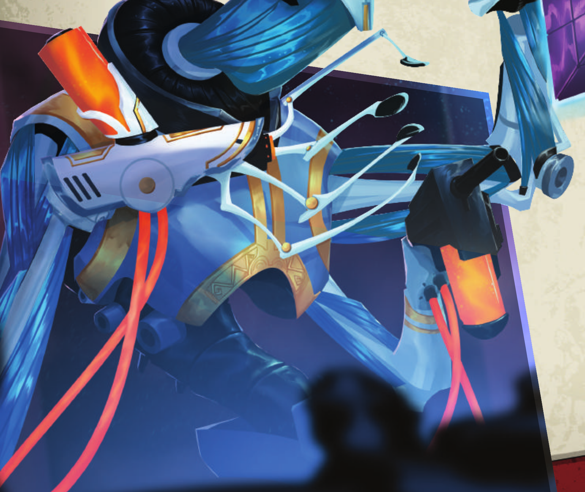LOGOS
The self-proclaimed “foremost” intellectuals and scholars on the Crucible are all found within the Society of Logic and Reason, or simply Logos. Any Logotarian would happily confirm this fact if asked, or if not asked, or if given any opportunity to speak at all.
Logos has devoted itself to the advancement of scientific knowledge and understanding, putting aside as many earthly (or at least fleshly) concerns as it can manage through use of its advanced technology. Individual Logotarians often replace some or all of their bodies with machines over the years, allowing them to escape the distractions of a physical form, and continue their work long after sickness or death would otherwise claim them. In fact, the use of cybernetic bodies is so widespread that no one outside the Society can recall what the physical bodies of the original Logotarians looked like, or even if they came to the Crucible in their cybernetic forms to begin with. Logos itself remains silent on the matter.
TECHNOLOGY
Logos divides itself, in very broad terms, into two groups: Theorists and Mechanists. Each considers the other to be their intellectual inferior, and each is convinced that the most important contributions to science and technology have been made thanks to their efforts.
Theorists concern themselves with the realm of pure reason and possibility, where new theories are constantly developed in an effort to decode the secrets of the universe, both as it is and as it might be. Anything that can be demonstrated through math and reason is seen as potentially true; everything else is to be regarded with suspicion and attacked rigorously until a theoretical model is found. Mechanists, on the other hand, deal with empirical data and the world as-it-is. A theory is useless if it cannot be tested, and a technology is unproven until it is built and shown to work.
Logos is happy to accept brilliant members of all species into its ranks; after all, few of them keep their organic bodies for more than a century or two anyway.
While some call Logos’s zealous commitment to advancing knowledge at any cost unethical, and describe some of their more inventive exper-iments as “deranged,” “catastrophic,” or “really very bad,” true Theorists scoff at such backward thinking. They understand that the secrets of the Crucible are far more important than the lives of any one individual or city, and that no progress was ever made without a few naked singulari-ty pinhole events warping local spacetime.
Logos technology is among the most advanced on the Crucible, and it is incorporated into every phase of their lives—indeed, it is rare to find a Logotarian who doesn’t have Logos technology built into their bodies. Whether it’s mag-tethered floating limbs (for easy modularity) or a quantum dissonance modulator (for…reasons), Logos machines are built for every conceivable purpose and also for some that aren’t.
Because Logos is continually pushing the frontier of knowledge, many of their technologies are experimental or prototypical; some are never replicated because they do not work as well as desired (or work entirely too well in the wrong way). Some of these “machines” may have originated as organic beings—there is minimal ethics oversight on the experiments of the Logotarians.
Many Logotarian machines incorporate æmber into their function, either as a power source or to harness some of its more esoteric properties. Others are designed expressly to investigate and ana-lyze æmber, a project which has remained stubbornly difficult no matter how advanced Logos’s science becomes.
ARCHONS
For Logos, archons are one of the ultimate unsolved puzzles of the Crucible. They eagerly study archons and are happy to work with them to learn more of their nature. Since archons are also generally curious about their own nature, many join in Logos’s quest for knowledge.
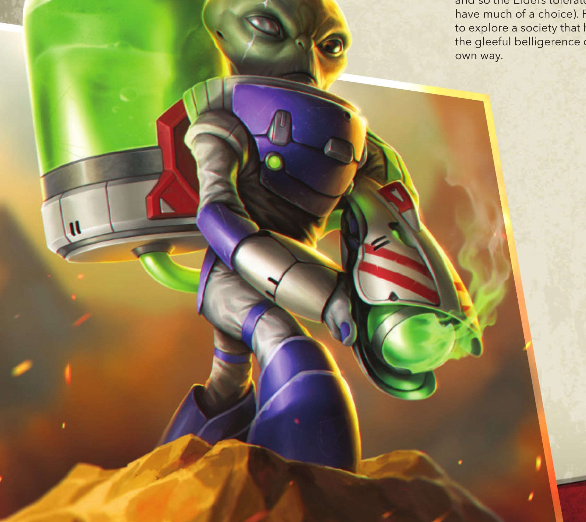MARS
Mars, as an empire, is exceptional in that it has remained a more-or-less unchanged political and cultural bloc after its relocation to the Crucible by the Architects two centuries ago. Perhaps due to the fact that the transition occurred during the final days of the Fall of Mars, or perhaps simply based on Mars’ rela-tive-newcomer status, the Martian Empire has remained intact on the Crucible. It is still under the control of the Martian Elders and still aggressively dominating as much of the Crucible as they can manage in their xenophobic crusade to ensure that Mars Lives On.
Now powered by æmber, rather than the cavorite that poisoned their home planet, Mars’s war machine has found some success, but also more difficult and dangerous foes than they could have expected. New life forms on the Crucible mean more opportunities for Martian biological engineers to breed a perfect monster. New elements, such as æmber, provide more fodder for Martian scientists and engineers. But Martian soldiers with their ray guns and Martian vehicles with their blasters are not always victorious when pitted against Brobnar war-riors or swarms of Niffle apes. For Mars to have true victory, they must reclaim the skies with their flying saucers. Unfortunately, they have had only limited success in rebuilding the Martian fleet, and some mysteri-ous force keeps their spaceships from rising above the atmosphere.
TECHNOLOGY
Still, by maintaining large cloning facilities and dropping their soldiers into combat from hovering motherships, the relatively weak (in a phys-ical sense) Martians have established themselves in Nova Hellas, and now control three entire cities. Tremble before the might of Mars!
Martian technology was highly advanced when they were translocated to the Crucible and, despite needing to completely re-invent itself for its new context, has only become more sophisticated since. Martian soldiers go to war armed with powerful and mysterious weapons and piloting highly advanced, lethal walkers and ships, while genetical-ly-modified monstrosities are turned loose as a vanguard, hopefully against the enemies of Mars. (Perhaps unsurprisingly, most Martian technologies are either purpose-built for war, or soon turned to that purpose.)
Unlike many other factions on the Crucible, Mars remains committed to genetic and cultural purity, that Mars may never die. Even before their translocation to the Crucible, Mars was using genetic enhancement technology and extensive cloning to divide their culture into two dis-tinct castes: the taller, more intelligent Elders, who rule over the smaller, weaker, and far more numerous Martian Soldiers.
While the Soldier caste are expected to display utter loyalty to Mars and are discouraged (sometimes with cranial electro-correction) from devel-oping unique personalities, Elders are varied in their areas of expertise and interest, and have considerable leeway to indulge their personal desires. Some develop new biological weapons (whether plagues or horrifying monsters), some study the lesser beings and the Crucible, others archive Martian culture and history. Together, the Elders collec-tively rule the Martian Empire—all for the glory of Mars!
While Mars once relied on cavorite to power its rayguns and levitate its flying saucers, it has found a suitable substitute in the æmber found only on the Crucible. The psycho-reactive æmber seems to have unlocked the psychic potential of the Martian race, and new experi-ments in mind control, telepathy, and other psionic technologies prom-ise great things for the Martian future.
ARCHONS
To the Elders of Mars, archons are both potential threat and ally. Their wisdom and power is undeniable, but they carry with them an unde-niable potential to corrupt Martian purity with their foreign ideas and companions. Still, the threat is acceptable when the payoff is so high, and so the Elders tolerate fraternization with the archons (not that they have much of a choice). For their part, archons seldom get a chance to explore a society that has remained so wholly itself. And of course the gleeful belligerence of the Martian war machine is attractive in its own way.
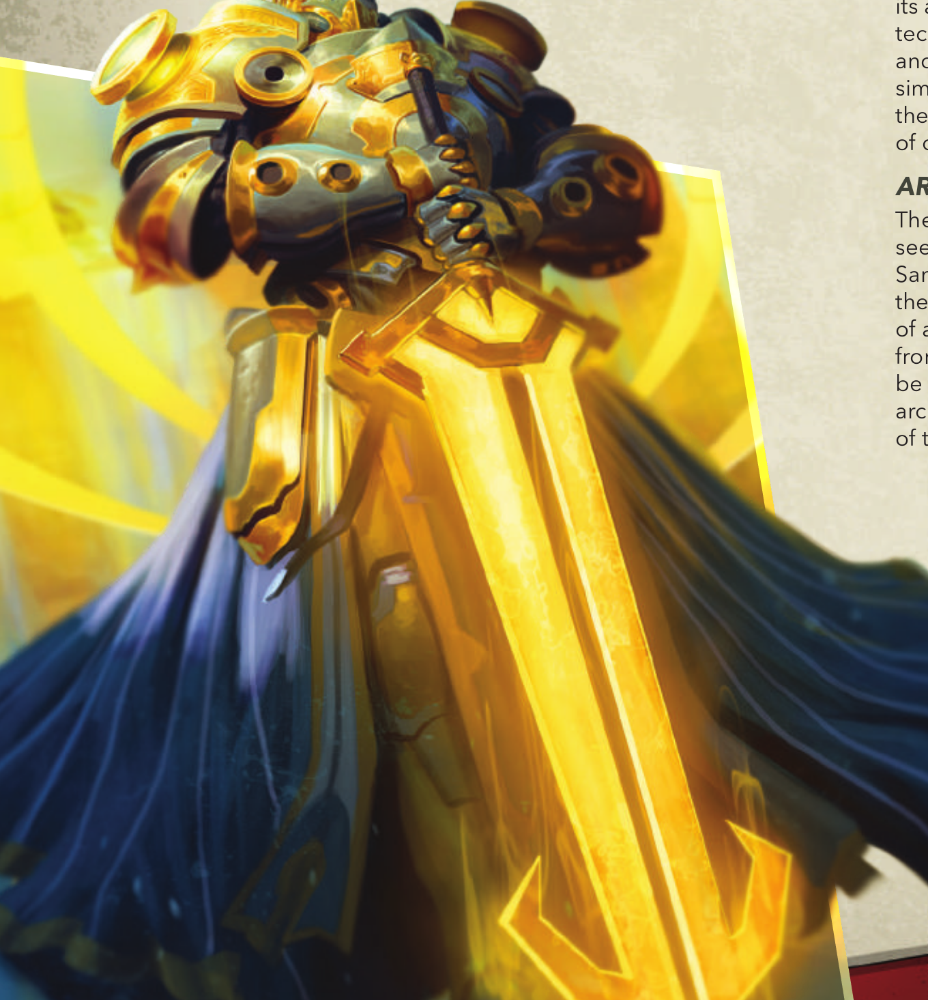SANCTUM
Floating as if by magic above the surface of the Cruci-ble are many large islands, improbable paradises of water, stone, and green growing things. Some believe that these islands are but the beginnings of a new layer of the Crucible, to be assembled by the Architects over the following millennia; others spec-ulate that this new layer is already under construction and these islands must be leftovers from that process.
In any case, many of these islands are governed by and collectively referred to as the Sanctum. A theocratic nation-state unified by their gnostic faith and protected by the angelic Knights of the Sanctum (as well as various other knightly and crusading orders), the Sanctum is safe, clean, and pleasant, which is a rare combination for any realm on the Crucible. Wherever the golden wings of their knights spread, the innocent and just can rest easy, knowing that they are protected by the Church of the Opened Eye. (The definitions of the terms “innocent” and “just”, of course, are determined by the Church itself.)
The bulk of the Sanctum’s flesh-and-blood adherents are human beings, but certainly the Church of the Opened Eye does not have its origins on the human homeworld. It’s possible that the Sanctum and their faith were both created on the Crucible, perhaps in imitation of the archons with which early adherents must have been familiar. If the scholars and Grey Monks know, they are not sharing those secrets with the unenlightened.
TECHNOLOGY
Although they are sometimes literally above earthly concerns, the Sanctum has regular communication with the world below. Missionar-ies, ambassadors, and even merchants walk through the streets of the
Crucible’s villages and cities, or even travel to wild and inhospitable places to bring the Sanc-tum’s truth to the unenlightened. Usual-ly, these travelers are welcomed, and when they are not, well, that’s what the Knights are for.
The difference between a powerful Sanctum angel and an archon seems subtle to the point of meaninglessness to most believers of the Sanctum. From the point of view of the Church, archons are everything they believe made manifest: a pure soul, a perfect consciousness free of any limitations of physical form. Sanctum knights are eager to learn from such beings, and the archons, for their part, are often eager to be looked upon, treated, and worshipped as deities. Indeed, some archons are even up to the task, and strive to enhance the spiritual lives of their followers.
The religion of the Sanctum teaches that through meditation, learning, and spiritual growth, a being can become enlightened and transcend their need for an earthly body. Many of the knights and the higher-rank-ing clergy are spiritual beings of pure energy; indeed, the mighty suits of powered armor worn by the knights are necessary containment devices for their spiritual selves, who otherwise could not affect the physical world at all. The gleaming wings and golden swords wielded by the knights to such impressive effect are the spiritual (some might say “psychic”) projections of the believer’s will, made possible by use of the sacred æmber, and further evidence of the divine and spiritual nature of all beings.
Most of Sanctum’s spirits can only manifest in the hallowed halls of their cathedrals or through the sacred armor of the knights. The most power-ful spirits of the Sanctum, called “angels,” are no longer bound by such limitations, and seem to manifest their selves and will directly as beings of shining golden luminosity.
There are still many creatures of flesh and blood within the Sanctum’s ranks, however. Enlightenment is not found easily, and for many is more about the journey than the destination. Some even profess that Sanctum’s spirits were always energy beings and that Enlightenment and Transcendence are impossible, a scam that has been propagated throughout the ages to oppress the masses, but such heretics are swiftly silenced within the Sanctum itself.
Sanctum’s signature technology is the glorious armor of its knights, powerful cybernetic suits that make flesh-and-blood wearers stron-ger, healthier, and faster, and enable great feats on the part of knightly spirits.
Much of Sanctum’s technology relies on the “spiritual energy” of its user, and æmber is incorporated to act as a conduit. For the knights, this energy is often channelled into wings and halos of golden light, which give the warriors superior mobility and tactical awareness on the battlefield. Their weapons, too, are enhanced by golden energy, creat-ing blades of pure light, shields that pulse with power, and other effects that reflect and enhance a knight’s purpose.
Aside from their knights, much of the Sanctum seems almost pastoral in its asceticism. The architecture is beautiful, but built with time-honored techniques that date from ages past. Records are maintained by hand and on paper, food is grown through honest toil, and in general virtue, simplicity, and peace are valued. At least for the laity; the cathedrals themselves are monuments to inner light and the glory of the Sanctum, of course, and for them no expense shall be spared.
ARCHONS
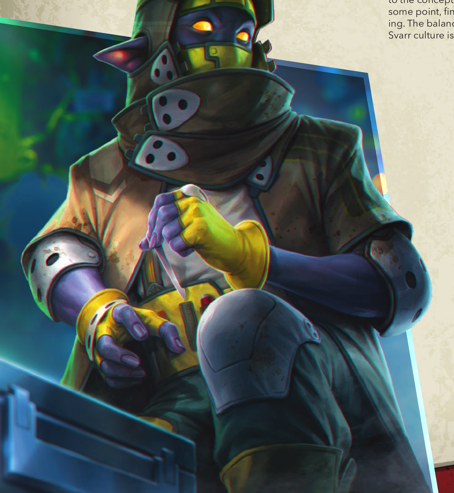SHADOWS
The Svarr elves that dwell in the Shadows are a motley collection of rogues, confidence artists, thieves, and sometime-assassins. Physically unimposing, the elves make up for it with speed, cleverness, and a light-fin-gered approach to other people’s possessions and technology.
Loosely organized into a series of like-minded guilds, the Svarr are a curious mixture of selfish and selfless. They will sacrifice much for the good of their guild, and yet ruthlessly exploit any opportunities presented by outsiders, robbing, cheating, and stealing for their own advantage without hesitation or regret.
Svarr histories hold that they once dwelled in a land of light and peace, but were exiled to the Shadows, where they were forced to hide and scavenge in order to survive. It isn’t clear whether this exile predates their translocation to the Crucible or if the myth (if myth it is) is directly based on that translocation, but whatever the case they hold the story as justification for any and all misdeeds. Fortunately for the Svarr, they are extremely talented in all arts of stealth, misdirection, and repurpos-ing other people’s tools.
TECHNOLOGY
Most Shadows technology is stolen or scavenged from someone else and then repurposed for Shadows use. Some Shadows operatives have even managed to reprogram the faeries that steward the Crucible’s biospheres, using them as scouts, saboteurs, assistants, and simply as pets (they are cute, after all).
Many are confused by what, precisely, the Shadows are—a nation, a place, a state of mind? The Svarr are pragmatic about it: anyplace they hide, anyplace they do their business, that’s the Shadows. The best thieves can find the Shadows anywhere.
If the Shadows have one piece of technology that is uniquely theirs, it is their cloaks, clever stealth emitters that surround them with an invisibil-ity field. Shadows elves frequently wear the distinctive three-dot stealth emitters all over their outfits for complete coverage of invisibility or illu-sion technology, as required. Using their cloaks, the thieves and rogues can always return to the Shadows whenever they need.
Most of the thieves in the Shadows are from the Svarr tribe of elves, a diminutive, dark, large-eyed people with wicked grins and sharp senses. Clannish and suspicious of outsiders, the Svarr dominate every Shadows guild. Svarr can also be found living and working alongside beings of all species in all sorts of places and under all sorts of creeds and governments. But these individuals may also be Shadows, because a good thief can blend in anywhere.
Humans and other aliens sometimes fall in with the Shadows guilds. After all, crime isn’t unique to the Svarr and they’ll recruit any asset that seems useful. Some of these recruits find themselves more at home in the Shadows than in their homelands, and eventually join a guild full-time, where they are, after proving themselves, as welcome as any Svarr.
ARCHONS
The Svarr have a simple means of assessing anything that isn’t of their guild: can it help, or is it a threat? Archons are clearly both, so they must be approached with care. But if one can be turned to an ally, then the dividends paid to the guild could be extreme. If nothing else, archons can apparently speak to anyone or anything, so they can help arrange deals and trades in the Shadows. Archons, who have to be introduced to the concepts of “personal property” and “ownership” by others at some point, find the Shadows interpretation of such concepts intrigu-ing. The balance of “me first” and “anything for a mate” that defines Svarr culture is one that many archons find eminently sensible.
UNTAMED
The Architects brought together plants, animals, and other lifeforms from all across the universe to populate their Crucible. In fact, they continue to do so, blending together alien biomes into something, if not quite harmonious, at least verdantly and bois-terously alive.
The various wild creatures of the Crucible are tended to by mechanical faeries, quirky automatons that do their best to keep a semblance of balance in place. But while they struggle to maintain this balance, the faeries make no attempt to keep the wildlife segregated, and so wolves from Earth may soon find themselves hunted by Martian snekgarrs, Niffle apes from Regulus Prime hang from the branches of the slow-blooming nepenthe tree of Visgard, and Alpha Centaurian sugar ants are consumed by Venusian flytraps. (Not to be confused with the surprisingly-similar plants from Earth.) Over time, these species evolve to find a comfortable home on the Crucible, even blending and interbreeding with aliens where they find compatible biology (sometimes aided by faeries and the strange mutations wrought by wild æmber). While some of these animals may still be recognizable as similar to the beasts on their planets of origin, others are wholly and forevermore creatures of the Crucible, and found nowhere else in the universe.
TECHNOLOGY
The Untamed as a whole do not use technology, since most scholarly distinctions between sentient being and wild beast revolve around its use. Still, there is some blurriness at the edges, and while Niffle apes may be considered animals, they do fashion crude jewelry and use simple tools when appropriate. The faeries of the wilderness are all machines, as well, and there are some truly strange examples of syn-thetic life in the galaxy that confuse the line ever further.
Collectively, these wild creatures are referred to as the Untamed. Together with the humans and other sentients who reject civilization and retreat to the wild, they form a large and chaotic faction of their own. With no central organization (indeed, in many cases with no true intelligence) to speak of, the only constant to the Untamed is that they live true to their natures, whatever those natures may be.
Many of the sentients who might be considered Untamed have walked away from most technology, but even in the wild places of the Crucible there are machines and tech to be scavenged and repurposed. Most civilizations will eventually succumb to the wild, after all.
Since the Untamed includes, by definition, every wild creature, plant, fungus, or other living thing on the Crucible, its diversity is impossible to overstate, but we’ll try: it’s very diverse. As for the sentient beings best described as “people” (of whatever species), they have more commonalities. Some were raised in civilized societies and turned away from them. Others have only ever lived in the wild. All are more comfortable under the open sky of the Crucible than in the cities of stone and steel, more able to converse with the beasts and birds than with their fellow sentients.
Some of these sentients, perhaps thanks to liberal consumption and use of æmber, have developed a near-supernatural ability to speak not only to animals, but to plants and fungus as well. Their abilities seem like magic, and many call these people “witches,” or by other names drawn from their own mythologies. But they are harmless. Mostly.
ARCHONS
The minds of the animals present a unique test of an archon’s vaunted ability to communicate with any denizen of the Crucible. Some are drawn to the uncomplicated thought patterns of the Untamed, consid-ering them a calming influence and a source of comfort. Other archons are drawn to the sense of wild and natural freedom these creatures exhibit. For the most part, the Untamed beasts are happy to ignore anything that is neither predator nor prey, but some particularly social animals (and people) enjoy the undemanding company of an archon during their travels.
ON RADIANT WINGS
by Daniel Lovat Clark
He felt the Vault’s presence like a chord that thrummed music through-out his body. Not that he had a body, exactly, not like the humans and the cyborgs and the creatures who followed him. In that way, at least, he felt a closer kinship to the ethereal spirits of Sanctum, but their wispy forms of pure psyche, bound as they were in heavy suits of knightly armor, were still more limited than him.
He could become anything. He knew that, felt that, deep inside. But becoming that anything—it was out of reach until he opened the Vault. Some part of himself was still locked away, waiting for him to find it. He could be anything, even wear a body for a time, but he couldn’t be, fully, until he was whole.
Argus pulled himself inward, fell back into the body-shape he wore most often, radiant wings fluttering behind, white robes billowing around a form held together by gleaming energy. It was an impressive look, and the reason they called him Radiant Argus the Supreme. He stepped forward, to where Sergeant Zakiel knelt with his dimmed aura. “Rise,” Argus said, his voice thrumming through mind as much as air.
“There is another Archon near the Vault, sire,” said Zakiel, falling into step alongside his Archon. Together, they walked past the remains of an ancient structure, plated in gold dataweave, part temple, part comput-er. Argus had been studying the ruin when he felt the Vault’s call, had determined that it had stood when this part of the world had been added to the Crucible. Its makers were a mystery; perhaps they had not come along with their temple when the Architects brought it here.
Zakiel, blind to these mysteries, continued speaking. “Miss ‘Onyx’ Censorius,” he said. “She has her own cadre of warriors, demons, and thieves.”
“A rival,” said Argus. He felt the music of the Vault shift, the chord tauten within him. The greater the struggle to open a Vault, the greater the reward. Did the Vaults reveal themselves explicitly to provoke these challenges? Or did the rewards within shift in response to the difficulty the Archon who opened it faced? He didn’t know. Who could guess the motives of the Architects? Perhaps that knowledge was locked in a Vault.
“We must act swiftly.” He could feel her now, reaching out, a dark and dissonant presence. She was ahead of him, had already gathered Æmber for her first key. But if she opened the Vault, then that part of himself that was locked away would go to her instead. “Zakiel, find two of the batdrones and take to the sky. Strike down upon her coterie, while we gather the Æmber in this valley.”
“It’s to be battle, then, my liege?” Zakiel asked, his aura flaring and his wings flickering into existence.
“It’s always battle,” Argus said, looking toward the Vault. Its song grew louder still. “How else are we to forge our perfect selves in the Crucible?
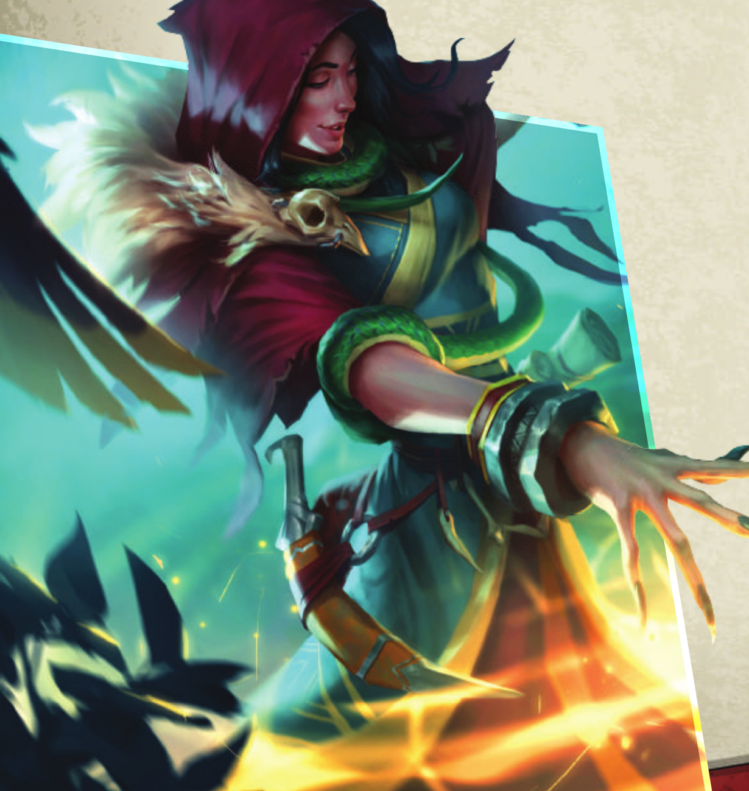THE ORIGIN OF KEYFORGE
CREDITS
In the early days of trading card games, they were played in many ways – and some of my favorite ways disappeared over time. Among those were sealed deck and league play. Both were awkward to manage because cards had a tendency to get lost in one’s collection. Also, play-ers could only play with trusted friends because it was easy to cheat by improving one’s deck surreptitiously.
I have often wondered if I could get back some of that really exciting play, which was characterized by tools that weren’t universal. Each play-er had treasures no other player had, but also had less powerful cards that needed to be used in clever ways to get the most value. One’s sealed or league deck was never ideal – but it was unique, and there was a great deal of skill in getting the most out of it.
While I enjoy constructing or drafting decks, I am often longing to play cards that are not powerful enough to compete within these formats. When playing with sealed or limited decks, these cards often become viable, since you can’t just replace them with top tier cards. I find special pleasure in winning a game using cards that many people ignored or overlooked.
I have always been attached to good procedurally generated content. Game worlds generated in this way really feel as if they belong to me, the player – I am discovering them as I play; the designer didn’t even know they existed. Often games without such content are extremely managed experiences; everyone goes through the same story lines and can experience the same gameplay by making the same decisions. Everything they experience feels planned. The contrast feels to me like the difference between exploring a jungle and walking in an amuse-ment park. When trading card games first came out the feeling was like exploring a jungle – and as the cards became more like commodities, it became more and more like an amusement park.
In the amusement park there are experts telling you how to play the game, the safest strategies, what net decks to use. In the jungle you have the tools you have. There is every chance that you are going to be the best in the world at playing your decks – you can’t just look up what the synergies are or the weaknesses; you will only find out by playing.
PLAYTESTERS
Aaron Haltom, Alex Davy, Allie, Andrew Aarestad, Andrew Fischer,
Andrew Gross, Benjamin Bottorff, Boyd Bottorff, Brian Weissman,
Welcome to the jungle!
Brodie Bensend, Bryden Cole, Bubbles the Hammer, Caleb “Bulldog”
Game Design: Richard Garfield
Game Development: Brad Andres, Skaff Elias, and Nate French with Daniel Schaefer
Producer: Erik Dahlman Fiction: Daniel Lovat Clark
Editing: Adam Baker and Kevin Tomczyk Card Game Manager: Mercedes Opheim Story Manager: Katrina Ostrander
Graphic Design: Christopher Hosch with Monica Helland, Michael Silsby, and Neal W. Rasmussen
Graphic Design Coordinator: Joseph D. Olson Graphic Design Manager: Brian Schomburg Cover and Concept Art: David Kegg
Art Direction: Andy Christensen and Taylor Ingvarsson with Crystal Chang
Managing Art Director: Melissa Shetler
Technology Implementation: Lukas Adrian Peregrine and Evan Hall Quality Assurance Coordinator: Zach Tewalthomas
Production Management: Jason Beaudoin and Megan Duehn Senior Project Manager: John Franz-Wichlacz
Senior Manager of Product Development: Chris Gerber Executive Game Designer: Corey Konieczka
Publisher: Andrew Navaro
Special thanks to Koni Garfield for countless hours of playtest, support, and good ideas.
Grace, Carl Anderton, Carl Beyer, Chasina Beyer, Chris Bizzell Clough,
Richard Garfield
Christopher Bates, CJ Heintz, Cyd Gardner, Damon Stone, Doug Keester,
April 2018
Edward West, Elliot Murray, Emeric Dwyer, Erika Baraišytė, Giedrius
Čeniauskas, Grace Holdinghaus, Ian Moore, Jacqueline Anderton, Jake
Ryan, Jason M. Wallace, Jason Walden, Jeremy “Niffle” Zwirn, Jim
Cartwright, Jim Lin, Jon Zierden, Josiah Leis, Julia Jannace, Katie Leis,
Kayli Ammen, Ken Uy, K.F.B. Fletcher, Kortnee Lewis, Liam MacDonald,
Luca Chilefone, Lukas Litzsinger, Luke Eddy, Margaret Miller, Martin
Vroom, Matrim Charlebois, Matt Lansdowne, Matthew “Ratt” Newman,
Matthew Pjecha, Matthew Watson, Michael Bernabo, Michael Boggs,
Micah Crosley, Miglė Pučetaitė, Nathan Gardner, Nathan Karpinski,
Nicholas Cyr, Nick Howard, Paul Klecker, Quinn Waller, Rick Reinhardt, Reuben Fries, Ron Beyer, Russell Jones, Ryan Anthony Wolohan,
Schuyler Garfield, Scott Lewis, Sean Monson, Terance Taylor, Tim
Huckelbery, Tobin Lopes, Tony Fanchi, Ugnius Dovidauskas, Weston
Garrett Bradley, WiL Springer, and William Morton
Special thanks to all of our beta testers.
© 2018 Fantasy Flight Games. Fantasy Flight Supply and the Unique Game logo are TM of Fantasy Flight Games. KeyForge, Fantasy Flight Games and the FFG logo are ® of Fantasy Flight Games. Fantasy Flight Games is located at 1995 West County Road B2, Roseville, Minnesota, 55113, USA, 651-639-1905. Actual components may vary from those shown. THIS PRODUCT IS NOT A TOY. NOT INTENDED FOR USE BY PERSONS 13 YEARS OF AGE OR YOUNGER.
ERRATA
This section conatins the official errata that have been made to individual cards in KeyForge. Errata overides the printed information on the card it applies to.
Biomatrix Backup (COTA 208)
Should read: “This creature gains,”Destroyed: Put this creature into its owner’s archives.””
FREQUENTLY ASKED QUESTIONS
This section provides answers to a number of common questions that are asked about the game. These questions are presented in a “Question and Answer” format, with the newest questions at the end.
My opponent has 14 Æmber in their pool and I have 0 in mine. At the start of my turn I select Shadows as the active house and play the card Bait and Switch (CoTA 267). How many times does Bait and Switch trigger?
In this situation, Bait and Switch’s effect will be triggered 7 times. Each time the effect is triggered it will check if your opponent still has more
Æmber than you, and if they do it will trigger again. So after the first time the effect triggers you will have 1 Æmber and your opponent will have 13, the second time you will have 2 Æmber and your opponent will have 12, then 3 and 11, 4 and 10, 5 and 9, 6 and 8, then finally 7 and
7. Once both players have the same amount of Æmber when the effect checks if your opponent has more Æmber than you the effect will see that your opponent does not and the card effect will not trigger again.
Note: Repeating an effect does not interact with the Rule of Six (see page 7), as the Rule of Six only applies to playing or using cards, not triggering their effect multiple times.
Its the first turn of the game and I am going first. I choose house Logos to be the active house and play the card Phase Shift (CoTA 117). Does this allow me to play another card this turn even though the First Turn Rule (see page 5) is in effect?
Playing Phase Shift will allow you to play another card from your hand this turn, since the First Turn Rule can be modified by card effects.
Its the first turn of the game and I am going first. I choose house Logos to be the active house and play the card Wild Wormhole (CoTA 125). Can Wild Wormhole’s effect be resolved even though the First Turn Rule (see page 5) is in effect?
Wild Wormhole’s effect can be resolved. The First Turn Rule specifies that players cannot play or discard more than one card from their hand. However it does not prohibit cards from being played or discarded from other game areas, such as your deck.
I have 2 chains and 7 cards in hand when moving to my draw cards step. Will I shed a chain during this step?
No, you will not shed a chain during this draw cards step. Chains are only shed when a player would draw cards during the draw step and the chains prevent them from doing so (see “Chains” on Page 8). Since you already have 7 cards in your hand, you aren’t going to be drawing any cards, and thus don’t lose any of your chains.
I have 2 chains and 5 cards in hand when moving to my draw cards step. Will I shed a chain during this step?
Yes, you will shed a chain during this step. Chains are only shed when a player would draw cards during the draw step and the chains prevent them from doing so (see “Chains” on Page 8). You only have 5 cards in hand, and normally you would draw a card to refill your hand. However because of the chains you are prevented from drawing that card. Since you would normally have drawn the card and the chain prevented it, you then shed 1 chain.
I have chosen house Logos to be my active house this turn and start off by playing Library Access (CoTA 115), I then play Wild Wormhole (CoTA 125). In what order do I resolve this combination of effects?
When you play a Wild Wormhole after playing a Library Access the following happens in this order:
1. You gain 1 Æmber from Wild Wormhole’s Æmber bonus.
2. You draw a card from Library Access’s effect.
3. You resolve Wild Wormhole’s effect and play the top card of your deck.
4. You gain Æmber from any Æmber bonus on the played card.
5. You draw a card from Library Access’s effect.
6. You resolve any play effects on the card played from the top of your deck.
I have the card Pitlord (CoTA 093) in play and my opponent plays the card Restringuntus (CoTA 094) and chooses house Dis. What happens when I try to declare my house on my next turn?
On your next turn, during the choose a house step, you will be in a position where you must choose house Dis (because of the Pitlord), but also cannot choose house Dis (because of the Restringuntus). Cannot effects have precedence over must effects, thus you cannot choose Dis.
(see “Cannot Vs Must” on Page 9.) You may still choose either one of your other houses though.
I have a Faygin (CoTA 300) in play and my opponent has an Urchin (CoTA 315) in play. I reap with Faygin and with its reap effect I choose my opponent’s Urchin. What happens?
Faygin’s effect causes the Urchin to try and go into your hand, however when a card leaves play it always goes to its owner’s corresponding out of play zone (See “Leaves Play” on Page 11) unless the card causing it to leave play specifies otherwise. The Urchin is returned to your opponent’s hand instead of yours.
I have 0 Æmber in my Æmber pool and have chosen house Logos to be my active house this turn. I play Wild Wormhole (CoTA 125) and try and play the top card of my deck is Kelifi Dragon (CoTA 037).
What happens?
The Kelifi Dragon is returned to the top of the deck. Kelifi Dragon has a play requirement of needing to have 7 Æmber in your Æmber pool, and since you didn’t have any initially (you now have 1 from playing the Wild
Wormhole) you don’t have enough to be able to play the Kelifi Dragon.
Since you can’t play the card it is returned to the place you tried to play it from, in this case the top of the deck.
On my opponent’s turn they use their Yxilo Bolter (CoTA 204) to reap and choose to resolve its reap effect on my Bad Penny (CoTA 296). Is the Bad Penny purged or does it end up back in my hand?
The Bad Penny goes back to your hand. “Destroyed:” effects (see
“Destroyed” on Page 10) happen immediately before a creature is destroyed, meaning that Bad Penny is back in its owner’s hand before the Yxilo Bolter can try to purge it with its reap effect. At that point, any pending effects waiting to resolve on Bad Penny no longer do. This is because Bad Penny is moving to an out-of-play zone in which the identity of cards is hidden from the opponent (see “Leaves Play” on
Page 11).
I have a stunned creature in my battleline, play the card Anger (CoTA 001), and choose to resolve its effect on that stunned creature. What happens?
If a card (such as Anger in this case) allows you to use a creature and if the creature you are trying to use is stunned, you remove the stun instead of doing anything else. Since Fighting is a type of being used the creature is exhausted and the stun counter is removed.
This will even work if your opponent has no creatures in play, because unstunning replaces the normal “use” (in this case fight) of the card before it begins.
I have chosen house Logos to be my active house this turn and play a Phase Shift (COTA 117) then play another copy of Phase Shift. How many non-Logos cards can I play this turn?
You can play two non-Logos cards this turn. Each copy of Phase Shift that you play allows you to play an additional non-Logos card.
I have a Stealer of Souls (CoTA 098) in play and my opponent has a Valdr (CoTA 029). I use my Stealer of Souls to fight Valdr and both creatures are destroyed. Does the Stealer of Souls’ ability trigger?
No, the Stealer of Souls’ ability will not trigger. In order for the Stealer of Souls ability to trigger it must be in play, so if both the Stealer of Souls and the creature it is fighting die, they die simultaneously and the Stealer of Souls ability cannot trigger (see “Destroyed” on Page 10).
I play the card Library Access (CoTA 115). Is the card immediately put in the discard pile? Or does it remain in play as long as the effect is active.
Action cards are immediately put into the discard pile after their effects resolve. In the case of an Action card that has a lasting effect like Library Access, once the effect is established by resolving the card, the card is immediately put into the discard pile and does not remain in play.
I have a Combat Pheromones (CoTA 180), “John Smyth” (CoTA 195), and Mindwarper (CoTA 196) in play. I sacrifice the Combat Pheromones and reap with the Mindwarper, and then reap with “John Smyth” and use “John Smyth’s” reap effect to ready the Mindwarper. Can I use the Mindwarper again?
Yes, Combat Pheromones is granting permission to use a creature during that turn. If you have an effect that readies one of the Mars cards affected by the Combat Pheromones (Such as “John Smyth”), you will be able to use that card again.
I play King of the Crag (CoTA 038) while my opponent has a Looter Goblin (CoTA 041) in play. What happens?
The rules for damage state that “If a creature has as much or more damage on it as it has power, the creature is destroyed and placed on top of its owner’s discard pile.” When a creature has 0 power, if it has 0 damage on it, it is destroyed.
My opponent has a Banner of Battle (CoTA 020) in play. Can I play the card Poltergeist (CoTA 069) to destroy the Banner of Battle, even if the artifact can’t be used?
Yes, you can resolve the effect of Poltergeist on any artifact in play even if the artifact cannot be used. You just resolve as much of the card effect as you can (see “Resolve As Much As You Can” on Page 7), and to resolve this situation you just destroy the artifact.
I have no creatures in play and my opponent has two. Can I play the card Lost in the Woods (CoTA 327) even though I don’t have two creatures in play?
Yes you can. The “Resolve As Much As You Can” rule (see Page 7) says that you resolve as much of a card effect as possible and any part of a card you cannot resolve is ignored. In the context of Lost in the Woods, it means that you shuffle in as many of the creatures as you can. So in the case that your opponent has two or more creatures in their battleline and you have none, you will shuffle in two enemy creatures and no friendly creatures.
I have an exhausted Bumpsy (CoTA 030) in play and my opponent has no creatures in their battleline. I play the card Anger (CoTA 001) and choose to resolve it on Bumpsy. What happens?
The Bumpsy will be readied by the effect of Anger, but since there are no enemy creatures in play it cannot be used to fight so it stays ready. The creature can then be used as per the standard rules.
I control a Spangler Box (CoTA 132) that has purged my own Kelifi Dragon (CoTA 037). The Spangler Box is returned to its owner’s hand with Grasping Vines (CoTA 324), but I don’t have any Æmber.
Do I get my Kelifi Dragon back?
Yes. The Kelifi Dragon is not being played when it is returned by the
Spangler Box, it is being put into play. Being put into play bypasses the normal play restrictions, meaning that the Kelifi Dragon is put back into play no matter how much Æmber you have.
I play Smaaash (CoTA 046), but each of my opponent’s creatures is already stunned. Do I have to resolve the effect against Smaaash itself?
No. You may still choose to resolve Smaaash’s “Play:” effect against one of your opponent’s creatures, however you cannot put a stun counter on an already stunned creature so nothing will happen.
My opponent puts two of my creatures into their archives using the card Sample Collection (CoTA 175). On my next turn I play the card Dysania (CoTA 141). What happens?
Playing the Dysania will cause each of your opponent’s archived cards to be discarded, however since the Sample Collection states that when these creatures leave the archives they are put into their owner’s hand instead these cards are returned to your hand. Since these cards were not discarded by Dysania’s effect, you will not gain any Æmber from the resolution of that effect.
I have Shadow Self (CoTA 310) with a Raiding Knight (CoTA 255) as a neighbor. My Raiding Knight is then attacked by a 4 power creature. How much damage does each creature take in this situation?
In this case, the Shadow Self will take 2 damage, the Raiding Knight will take no damage, and the 4 power creature will take 4 damage and be destroyed. This happens because before the damage can be dealt to the Raiding Knight, two of it is prevented by its armor. Then when the damage is actually being dealt, the damage that would be dealt to the Raiding Knight is dealt to the Shadow Self instead. At the same time as the Shadow Self is being dealt damage, the 4 power creature takes 4 damage from the Raiding Knight’s power.